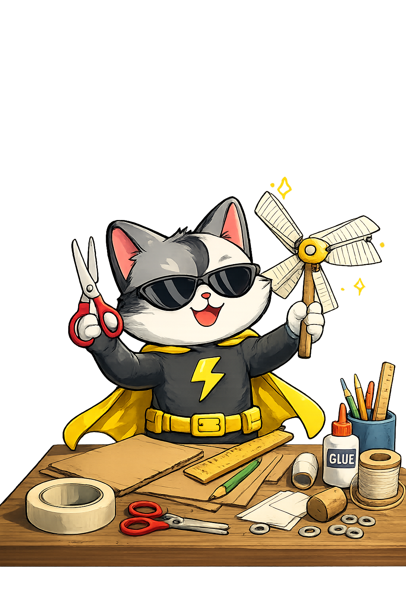

Captain Wattson's DIY Energy Lab
Fun hands-on activities that help kids learn about renewable energy, sustainability, and smart everyday habits.

Fun ways for kids to save energy and waste less at home.
The Energy Lab helps kids learn simple habits that make everyday life more sustainable. Each activity is a practical way to notice energy, reuse what you already have, and make smarter choices at home.
DIY Solar Oven
Use sunlight to make a simple treat and see how natural warmth can do a job without plugging anything in.
- Save energy: Notice when sunlight can help warm things naturally instead of using extra electricity.
- Smart habit: Open curtains on cool sunny days and use natural light before switching on lamps.
- At home: Talk about which rooms get the most sun and how your family can use that wisely.
MacGyver Windmill
Make a small windmill and learn how moving air can remind us to use fresh air and fans wisely at home.
- Save energy: Use windows, shade, and breezes before turning cooling on higher than needed.
- Smart habit: Keep doors and windows closed when heating or cooling is running.
- At home: Find the coolest part of the house and think about how airflow changes through the day.
Reusable Lunch Bag
Reuse old fabric to make something useful, then think about how one reusable item can replace lots of throwaway ones.
- Waste less: Choose reusable containers, bottles, and bags instead of single-use packaging.
- Smart habit: Repair, reuse, or repurpose items before throwing them away.
- At home: Pick one lunch item your family can swap for a reusable option this week.